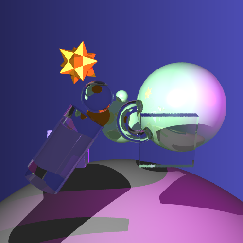

Max Burstyn's CS 488 Project Page
Table of Contents
- Additional Primitives
- Texture Mapping
- Bump Mapping
- Constructive Solid Geometry
- Glossy Reflections
- Refraction
- Hierarchical Bounding Boxes
- kd-trees
- Caustics
- Unique Scene
Objective 1: Additional Primitives
|
Cylinder, Cone, and Tori. |
Objective 2: Texture Mapping
|
Texture mapping for all primitives. |
Objective 3: Bump Mapping
|
Bump mapping for all primitives. |
Objective 4: Constructive Solid Geometry
|
Sphere - (Cylinder - Torus) CSG. |
Texture mapping CSG. |
|
A donut! |
Objective 5: Glossy Reflections
|
Glossy and non-glossy sphere. |
Glossier and non-glossy sphere. |
|
Glossy reflections off a floor. |
Objective 6: Refraction
|

Refractive primitives. |
Objective 7: Hierarchical Bounding Boxes
Hierarchical bounding box timings for the final scene:
| Hierarchical | Regular | |
| intersections | 146877791 | 211673667 |
| real | 2m53.958s | 3m39.342 |
| user | 11m25.103 | 13m56.096s |
| sys | 0m0.544s | 0m0.688s |
About 65 Million intersections avoided, and 2.5 min saved.
Bounds here, but I'll save the final images for the end!
{kind=link}
|
Final scene from A4. |
Hierarchical bounding boxes for scene from A4. |
|
Macho cows from A4. |
Hierarchical bounding boxes for macho cows. |
Objective 8, 9: kd-trees and Caustics
|
Caustics from clear cylinder, sphere, and reflective ring. |
Just the caustics on a black surface. |
Objective 10: Unique Scene
|
Final scene with photon mapping enabled. |
Final scene with no photon mapping. |